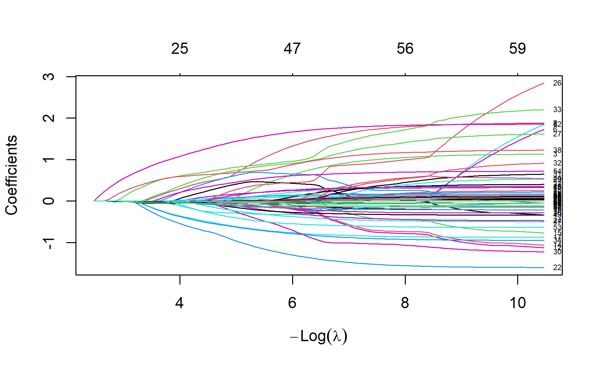
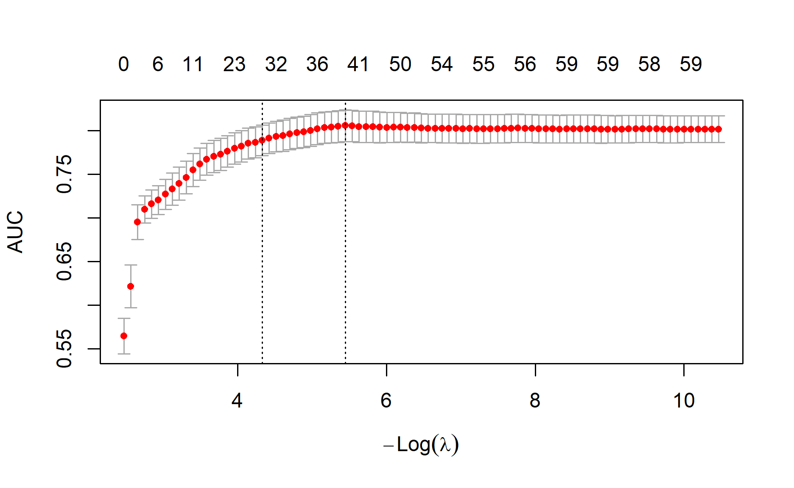
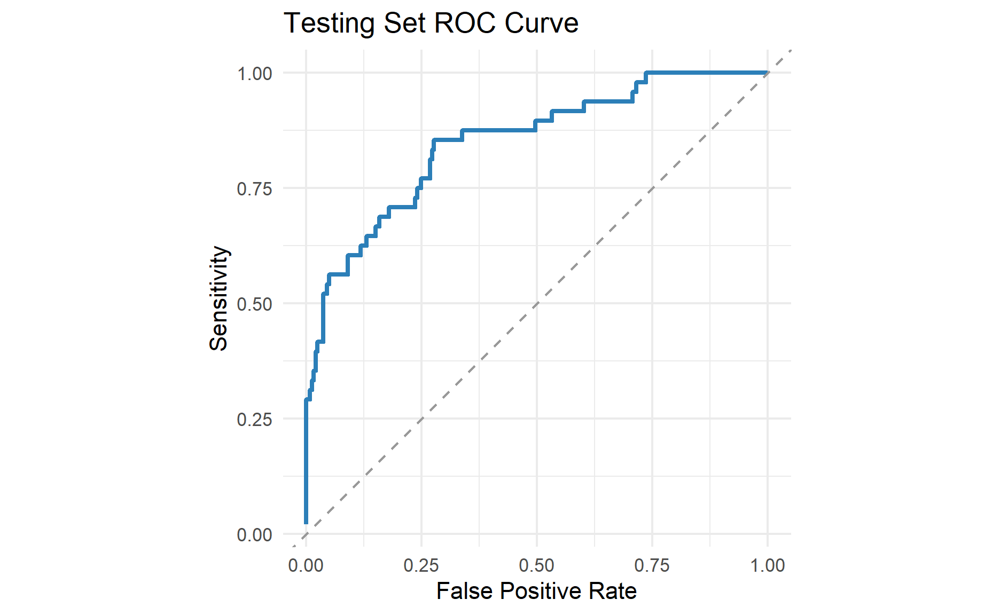
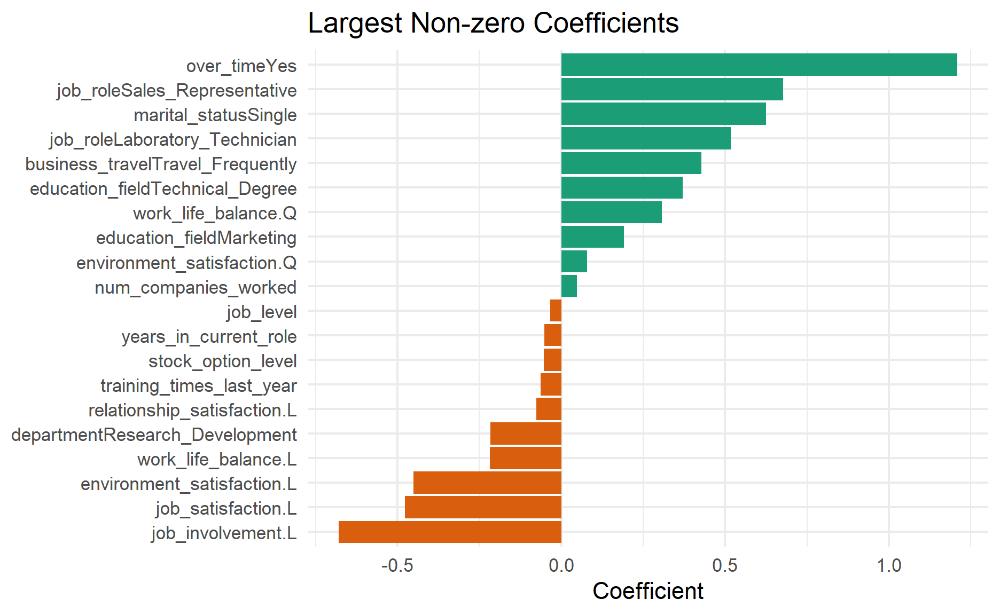
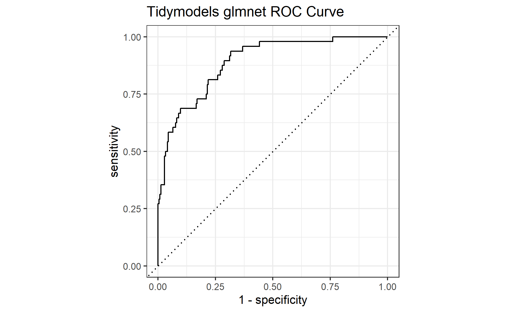

Lasso your predictors, ridge your bets, and stretch into elastic net with glmnet in R.
Photo by Moustafa Neamatalla on Unsplash
glmnet?glmnet is one of the most widely used R packages for regularised regression. It fits generalized linear models with an additional penalty term, which helps control overfitting when the data contains many predictors, correlated predictors, or noisy variables (Friedman et al. 2010; Hastie et al. 2025).
In practical modelling work, glmnet is attractive because it is fast, stable, and flexible. The same package can be used for linear regression, logistic regression, multinomial classification, Poisson models, and Cox models. In this post, I will focus on a binary classification problem and use glmnet to build a regularised logistic regression model.
The three common flavours are:
In glmnet, the blend is controlled by alpha:
alpha = 0 # ridge
alpha = 1 # lasso
0 < alpha < 1 # elastic netThe strength of the penalty is controlled by lambda. A larger lambda means more shrinkage. In practice, we usually tune lambda with cross-validation instead of choosing it manually. The modelling question is therefore not only “which variables should be included?”, but also “how much complexity should the model be allowed to keep?”
For this demonstration, I will use the public IBM employee attrition data available from the modeldata package. The target variable is Attrition, which indicates whether an employee left the company.
The modelling objective is:
Use employee information to predict whether the employee is likely to leave.
This is a binary classification problem, so we will fit a logistic regression model with elastic net regularisation. The goal is not to claim that the selected variables cause attrition. The goal is to build a predictive model, evaluate it honestly on a holdout dataset, and inspect which variables are most influential in the fitted model.
First, load the packages.
pacman::p_load(
tidyverse,
janitor,
glmnet,
modeldata,
tidymodels
)
tidymodels_prefer()If you do not have these packages installed, pacman::p_load() will install and load them.
The dataset is included in modeldata, so we do not need to manually download a CSV file.
data(attrition, package = "modeldata")
df <- attrition %>%
clean_names() %>%
mutate(attrition = factor(attrition, levels = c("No", "Yes"))) %>%
select(-any_of("employee_number")) %>%
select(where(~ n_distinct(.x) > 1))
glimpse(df)Rows: 1,470
Columns: 31
$ age <int> 41, 49, 37, 33, 27, 32, 59, 30, 3…
$ attrition <fct> Yes, No, Yes, No, No, No, No, No,…
$ business_travel <fct> Travel_Rarely, Travel_Frequently,…
$ daily_rate <int> 1102, 279, 1373, 1392, 591, 1005,…
$ department <fct> Sales, Research_Development, Rese…
$ distance_from_home <int> 1, 8, 2, 3, 2, 2, 3, 24, 23, 27, …
$ education <ord> College, Below_College, College, …
$ education_field <fct> Life_Sciences, Life_Sciences, Oth…
$ environment_satisfaction <ord> Medium, High, Very_High, Very_Hig…
$ gender <fct> Female, Male, Male, Female, Male,…
$ hourly_rate <int> 94, 61, 92, 56, 40, 79, 81, 67, 4…
$ job_involvement <ord> High, Medium, Medium, High, High,…
$ job_level <int> 2, 2, 1, 1, 1, 1, 1, 1, 3, 2, 1, …
$ job_role <fct> Sales_Executive, Research_Scienti…
$ job_satisfaction <ord> Very_High, Medium, High, High, Me…
$ marital_status <fct> Single, Married, Single, Married,…
$ monthly_income <int> 5993, 5130, 2090, 2909, 3468, 306…
$ monthly_rate <int> 19479, 24907, 2396, 23159, 16632,…
$ num_companies_worked <int> 8, 1, 6, 1, 9, 0, 4, 1, 0, 6, 0, …
$ over_time <fct> Yes, No, Yes, Yes, No, No, Yes, N…
$ percent_salary_hike <int> 11, 23, 15, 11, 12, 13, 20, 22, 2…
$ performance_rating <ord> Excellent, Outstanding, Excellent…
$ relationship_satisfaction <ord> Low, Very_High, Medium, High, Ver…
$ stock_option_level <int> 0, 1, 0, 0, 1, 0, 3, 1, 0, 2, 1, …
$ total_working_years <int> 8, 10, 7, 8, 6, 8, 12, 1, 10, 17,…
$ training_times_last_year <int> 0, 3, 3, 3, 3, 2, 3, 2, 2, 3, 5, …
$ work_life_balance <ord> Bad, Better, Better, Better, Bett…
$ years_at_company <int> 6, 10, 0, 8, 2, 7, 1, 1, 9, 7, 5,…
$ years_in_current_role <int> 4, 7, 0, 7, 2, 7, 0, 0, 7, 7, 4, …
$ years_since_last_promotion <int> 0, 1, 0, 3, 2, 3, 0, 0, 1, 7, 0, …
$ years_with_curr_manager <int> 5, 7, 0, 0, 2, 6, 0, 0, 8, 7, 3, …If an employee identifier is present, I remove it because it is not a useful modelling feature. I also remove columns with only one unique value because they cannot help the model separate the classes.
Let us check the target distribution.
df %>%
count(attrition) %>%
mutate(prop = n / sum(n)) %>%
kable(digits = 3) %>%
kable_styling(full_width = FALSE)| attrition | n | prop |
|---|---|---|
| No | 1233 | 0.839 |
| Yes | 237 | 0.161 |
The data is imbalanced: fewer employees left than stayed. This is common in attrition, churn, fraud, and many other operational classification problems. Accuracy alone can therefore be misleading because a model can look accurate simply by predicting the majority class. We will also look at AUC, sensitivity, and specificity.
To back test the model, we split the data into a training set and a testing set. The model only learns from the training set. The testing set is kept aside until the end, where it acts as unseen future data.
In production work, I would usually use a stratified split to preserve the outcome distribution. For this first glmnet example, I will keep the split deliberately simple so that the mechanics are clear.
set.seed(123)
train_index <- sample(seq_len(nrow(df)), size = 0.8 * nrow(df))
train_df <- df[train_index, ]
test_df <- df[-train_index, ]
bind_rows(
train = count(train_df, attrition),
test = count(test_df, attrition),
.id = "sample"
) %>%
group_by(sample) %>%
mutate(prop = n / sum(n)) %>%
ungroup() %>%
kable(digits = 3) %>%
kable_styling(full_width = FALSE)| sample | attrition | n | prop |
|---|---|---|---|
| train | No | 987 | 0.839 |
| train | Yes | 189 | 0.161 |
| test | No | 246 | 0.837 |
| test | Yes | 48 | 0.163 |
glmnetOne important difference between glmnet and many modelling functions in R is that glmnet() expects:
x: a numeric matrix of predictorsy: a vector or matrix of outcomesBecause our data contains categorical variables, we use model.matrix() to create dummy variables. This step is not optional: glmnet cannot work directly with character or factor columns.
x_train <- model.matrix(attrition ~ ., data = train_df)[, -1]
x_test <- model.matrix(attrition ~ ., data = test_df)[, -1]
y_train <- if_else(train_df$attrition == "Yes", 1, 0)
y_test <- if_else(test_df$attrition == "Yes", 1, 0)
dim(x_train)[1] 1176 59dim(x_test)[1] 294 59The [, -1] removes the intercept column because glmnet fits its own intercept by default.
Let us fit a basic lasso model first. A lasso model uses alpha = 1.
lasso_fit <- glmnet(
x = x_train,
y = y_train,
family = "binomial",
alpha = 1
)
plot(lasso_fit, xvar = "lambda", label = TRUE)
Each line in the plot is a coefficient path. As lambda changes, coefficients enter or leave the model. When the penalty is strong, many coefficients are close to zero. This is the key behaviour that makes regularised regression useful: the model is allowed to learn from many predictors, but it is penalised for keeping unnecessary complexity.
lambdaThe usual way to tune lambda is cv.glmnet(). For classification, I like to tune against AUC because it evaluates the model’s ranking ability across thresholds. This is especially useful when the final operating threshold may depend on business cost, capacity, or risk appetite.
set.seed(123)
lasso_cv <- cv.glmnet(
x = x_train,
y = y_train,
family = "binomial",
alpha = 1,
type.measure = "auc",
nfolds = 10
)
plot(lasso_cv)
lasso_cv$lambda.min[1] 0.004315598lasso_cv$lambda.1se[1] 0.01317921There are two popular lambda choices:
lambda.min: the value with the best cross-validated performance.lambda.1se: the most regularised value within one standard error of the best result.lambda.1se often gives a simpler model with similar performance, so it is a good default when interpretability and model stability matter. In stakeholder discussions, a slightly simpler model is often easier to defend than a marginally better but more complex model.
alpha and lambdacv.glmnet() tunes lambda for one fixed alpha. To tune both, we can run cross-validation across a small grid of alpha values.
set.seed(123)
alpha_grid <- seq(0, 1, by = 0.1)
tune_results <- map_dfr(alpha_grid, function(alpha_value) {
cv_fit <- cv.glmnet(
x = x_train,
y = y_train,
family = "binomial",
alpha = alpha_value,
type.measure = "auc",
nfolds = 10
)
tibble(
alpha = alpha_value,
lambda_min = cv_fit$lambda.min,
lambda_1se = cv_fit$lambda.1se,
cv_auc = max(cv_fit$cvm),
cv_fit = list(cv_fit)
)
})
tune_results %>%
select(alpha, lambda_min, lambda_1se, cv_auc) %>%
arrange(desc(cv_auc)) %>%
kable(digits = 4) %>%
kable_styling(full_width = FALSE)| alpha | lambda_min | lambda_1se | cv_auc |
|---|---|---|---|
| 1.0 | 0.0004 | 0.0132 | 0.8266 |
| 0.3 | 0.0030 | 0.0439 | 0.8244 |
| 0.7 | 0.0056 | 0.0156 | 0.8242 |
| 0.9 | 0.0010 | 0.0111 | 0.8230 |
| 0.4 | 0.0074 | 0.0397 | 0.8219 |
| 0.5 | 0.0072 | 0.0219 | 0.8213 |
| 0.8 | 0.0028 | 0.0150 | 0.8183 |
| 0.1 | 0.0056 | 0.0828 | 0.8152 |
| 0.2 | 0.0023 | 0.0794 | 0.8112 |
| 0.6 | 0.0072 | 0.0319 | 0.8095 |
| 0.0 | 0.0135 | 0.5574 | 0.8050 |
Now choose the best alpha by cross-validated AUC.
best_row <- tune_results %>%
slice_max(cv_auc, n = 1, with_ties = FALSE)
best_alpha <- best_row$alpha
best_cv_fit <- best_row$cv_fit[[1]]
best_alpha[1] 1best_cv_fit$lambda.1se[1] 0.01317921This final object is the tuned model. It contains the full regularisation path and the cross-validated choice of lambda. We have now used cross-validation inside the training data to make modelling decisions, but the testing dataset is still untouched.
Now we finally score the testing dataset. I will use lambda.1se for the final model because it usually favours a more compact model. This is the back test: it gives us a more realistic estimate of how the model behaves on data it did not see during training or tuning.
test_prob <- predict(
best_cv_fit,
newx = x_test,
s = "lambda.1se",
type = "response"
)
pred_df <- tibble(
actual = test_df$attrition,
pred_yes = as.numeric(test_prob),
pred_class = factor(if_else(pred_yes >= 0.5, "Yes", "No"), levels = c("No", "Yes"))
)
pred_df %>%
slice_head(n = 10) %>%
kable(digits = 3) %>%
kable_styling(full_width = FALSE)| actual | pred_yes | pred_class |
|---|---|---|
| Yes | 0.466 | No |
| No | 0.090 | No |
| Yes | 0.560 | Yes |
| Yes | 0.367 | No |
| No | 0.103 | No |
| Yes | 0.647 | Yes |
| No | 0.144 | No |
| Yes | 0.510 | Yes |
| No | 0.152 | No |
| No | 0.052 | No |
The predicted probability is often more useful than the final class. For example, a business team may choose to intervene only when the predicted attrition risk is above 70%, not merely above 50%. The classification threshold should be connected to the cost of intervention and the cost of missing a true attrition case.
confusion <- table(
Actual = pred_df$actual,
Predicted = pred_df$pred_class
)
confusion Predicted
Actual No Yes
No 246 0
Yes 36 12tn <- confusion["No", "No"]
fp <- confusion["No", "Yes"]
fn <- confusion["Yes", "No"]
tp <- confusion["Yes", "Yes"]
metrics <- tibble(
metric = c("Accuracy", "Sensitivity", "Specificity"),
value = c(
(tp + tn) / sum(confusion),
tp / (tp + fn),
tn / (tn + fp)
)
)
metrics %>%
kable(digits = 3) %>%
kable_styling(full_width = FALSE)| metric | value |
|---|---|
| Accuracy | 0.878 |
| Sensitivity | 0.250 |
| Specificity | 1.000 |
Sensitivity tells us how many actual attrition cases the model caught. Specificity tells us how many non-attrition cases the model correctly left alone.
auc_value <- pred_df %>%
mutate(
y = if_else(actual == "Yes", 1, 0),
rank = rank(pred_yes)
) %>%
summarise(
n_pos = sum(y == 1),
n_neg = sum(y == 0),
auc = (sum(rank[y == 1]) - n_pos * (n_pos + 1) / 2) / (n_pos * n_neg)
)
auc_value# A tibble: 1 × 3
n_pos n_neg auc
<int> <int> <dbl>
1 48 246 0.849roc_tbl <- tibble(threshold = sort(unique(pred_df$pred_yes), decreasing = TRUE)) %>%
mutate(
pred_class = map(
threshold,
~ factor(if_else(pred_df$pred_yes >= .x, "Yes", "No"), levels = c("No", "Yes"))
),
confusion = map(pred_class, ~ table(Actual = pred_df$actual, Predicted = .x)),
sensitivity = map_dbl(confusion, ~ .x["Yes", "Yes"] / sum(.x["Yes", ])),
specificity = map_dbl(confusion, ~ .x["No", "No"] / sum(.x["No", ])),
false_positive_rate = 1 - specificity
)
roc_tbl %>%
ggplot(aes(x = false_positive_rate, y = sensitivity)) +
geom_line(color = "#2C7FB8", linewidth = 1) +
geom_abline(linetype = "dashed", color = "grey60") +
coord_equal() +
labs(
title = "Testing Set ROC Curve",
x = "False Positive Rate",
y = "Sensitivity"
) +
theme_minimal()
AUC measures how well the model ranks employees who left above employees who stayed. A value of 0.5 is no better than random ranking. A value closer to 1 is better. In an attrition setting, ranking quality is useful because teams often have limited capacity and need to prioritise the highest-risk employees first.
For a regularised logistic regression model, each coefficient is still a log-odds coefficient. Positive coefficients increase the log-odds of attrition. Negative coefficients decrease the log-odds of attrition.
However, we should be careful:
Let us extract the non-zero coefficients.
coef_tbl <- coef(best_cv_fit, s = "lambda.1se") %>%
as.matrix() %>%
as.data.frame() %>%
rownames_to_column("term") %>%
rename(estimate = 2) %>%
filter(estimate != 0) %>%
mutate(abs_estimate = abs(estimate)) %>%
arrange(desc(abs_estimate))
coef_tbl %>%
kable(digits = 4) %>%
kable_styling(full_width = FALSE)| term | estimate | abs_estimate |
|---|---|---|
| over_timeYes | 1.2084 | 1.2084 |
| (Intercept) | -0.6948 | 0.6948 |
| job_involvement.L | -0.6796 | 0.6796 |
| job_roleSales_Representative | 0.6770 | 0.6770 |
| marital_statusSingle | 0.6256 | 0.6256 |
| job_roleLaboratory_Technician | 0.5176 | 0.5176 |
| job_satisfaction.L | -0.4779 | 0.4779 |
| environment_satisfaction.L | -0.4510 | 0.4510 |
| business_travelTravel_Frequently | 0.4285 | 0.4285 |
| education_fieldTechnical_Degree | 0.3706 | 0.3706 |
| work_life_balance.Q | 0.3073 | 0.3073 |
| work_life_balance.L | -0.2184 | 0.2184 |
| departmentResearch_Development | -0.2169 | 0.2169 |
| education_fieldMarketing | 0.1905 | 0.1905 |
| environment_satisfaction.Q | 0.0786 | 0.0786 |
| relationship_satisfaction.L | -0.0757 | 0.0757 |
| training_times_last_year | -0.0630 | 0.0630 |
| stock_option_level | -0.0541 | 0.0541 |
| years_in_current_role | -0.0513 | 0.0513 |
| num_companies_worked | 0.0473 | 0.0473 |
| job_level | -0.0336 | 0.0336 |
| age | -0.0326 | 0.0326 |
| years_with_curr_manager | -0.0109 | 0.0109 |
| distance_from_home | 0.0092 | 0.0092 |
| years_since_last_promotion | 0.0089 | 0.0089 |
| relationship_satisfaction.C | -0.0044 | 0.0044 |
| total_working_years | -0.0037 | 0.0037 |
| monthly_income | 0.0000 | 0.0000 |
Plot the largest coefficients.
coef_tbl %>%
filter(term != "(Intercept)") %>%
slice_max(abs_estimate, n = 20) %>%
mutate(term = fct_reorder(term, estimate)) %>%
ggplot(aes(x = estimate, y = term, fill = estimate > 0)) +
geom_col(show.legend = FALSE) +
scale_fill_manual(values = c("#D95F0E", "#1B9E77")) +
labs(
title = "Largest Non-zero Coefficients",
x = "Coefficient",
y = NULL
) +
theme_minimal()
In a logistic model, the coefficient is in log-odds units. If we exponentiate it, we get an odds ratio.
coef_tbl %>%
filter(term != "(Intercept)") %>%
mutate(odds_ratio = exp(estimate)) %>%
select(term, estimate, odds_ratio) %>%
arrange(desc(abs(estimate))) %>%
slice_head(n = 15) %>%
kable(digits = 3) %>%
kable_styling(full_width = FALSE)| term | estimate | odds_ratio |
|---|---|---|
| over_timeYes | 1.208 | 3.348 |
| job_involvement.L | -0.680 | 0.507 |
| job_roleSales_Representative | 0.677 | 1.968 |
| marital_statusSingle | 0.626 | 1.869 |
| job_roleLaboratory_Technician | 0.518 | 1.678 |
| job_satisfaction.L | -0.478 | 0.620 |
| environment_satisfaction.L | -0.451 | 0.637 |
| business_travelTravel_Frequently | 0.429 | 1.535 |
| education_fieldTechnical_Degree | 0.371 | 1.449 |
| work_life_balance.Q | 0.307 | 1.360 |
| work_life_balance.L | -0.218 | 0.804 |
| departmentResearch_Development | -0.217 | 0.805 |
| education_fieldMarketing | 0.190 | 1.210 |
| environment_satisfaction.Q | 0.079 | 1.082 |
| relationship_satisfaction.L | -0.076 | 0.927 |
An odds ratio above 1 means the variable is associated with higher odds of attrition, holding the other model variables constant. An odds ratio below 1 means it is associated with lower odds of attrition. Because this is an observational dataset, these coefficients should be read as model associations, not as causal estimates.
The default threshold of 0.5 is not always the best business choice. If missing an attrition case is costly, we may lower the threshold to catch more employees at risk. If interventions are expensive, we may raise the threshold to focus on the highest-risk employees.
For example:
threshold_results <- tibble(threshold = seq(0.1, 0.9, by = 0.1)) %>%
mutate(
pred_class = map(
threshold,
~ factor(if_else(pred_df$pred_yes >= .x, "Yes", "No"), levels = c("No", "Yes"))
),
confusion = map(pred_class, ~ table(Actual = pred_df$actual, Predicted = .x)),
accuracy = map_dbl(confusion, ~ sum(diag(.x)) / sum(.x)),
sensitivity = map_dbl(confusion, ~ .x["Yes", "Yes"] / sum(.x["Yes", ])),
specificity = map_dbl(confusion, ~ .x["No", "No"] / sum(.x["No", ]))
)
threshold_results %>%
select(threshold, accuracy, sensitivity, specificity) %>%
kable(digits = 3) %>%
kable_styling(full_width = FALSE)| threshold | accuracy | sensitivity | specificity |
|---|---|---|---|
| 0.1 | 0.527 | 0.917 | 0.451 |
| 0.2 | 0.799 | 0.708 | 0.817 |
| 0.3 | 0.871 | 0.562 | 0.931 |
| 0.4 | 0.881 | 0.354 | 0.984 |
| 0.5 | 0.878 | 0.250 | 1.000 |
| 0.6 | 0.847 | 0.062 | 1.000 |
| 0.7 | 0.837 | 0.000 | 1.000 |
| 0.8 | 0.837 | 0.000 | 1.000 |
| 0.9 | 0.837 | 0.000 | 1.000 |
This table makes the trade-off visible. Lower thresholds usually improve sensitivity but reduce specificity. Higher thresholds usually do the opposite.
tidymodelsThe direct glmnet workflow is useful because it exposes what the package expects: a numeric predictor matrix, an outcome vector, a value of alpha, and a value of lambda. In day-to-day modelling work, however, I often prefer tidymodels because it keeps preprocessing, resampling, tuning, fitting, and testing in one consistent workflow (Kuhn and Wickham 2020).
The terminology changes slightly:
penalty in tidymodels is the same idea as lambda in glmnet.mixture in tidymodels is the same idea as alpha in glmnet.mixture = 0 is ridge regression.mixture = 1 is lasso regression.0 < mixture < 1 is elastic net.For the tidymodels example, I will rebuild the split using initial_split() and stratify on the outcome. I also relevel the target so that "Yes" is treated as the event of interest for metrics such as ROC AUC, sensitivity, and specificity.
set.seed(123)
td_df <- df %>%
mutate(attrition = fct_relevel(attrition, "Yes"))
attrition_split <- initial_split(td_df, prop = 0.8, strata = attrition)
td_train <- training(attrition_split)
td_test <- testing(attrition_split)
vfolds <- vfold_cv(td_train, v = 5, strata = attrition)The recipe handles the feature engineering that we did manually with model.matrix() earlier. It removes zero-variance predictors and converts categorical predictors into dummy variables.
attrition_recipe <- recipe(attrition ~ ., data = td_train) %>%
step_zv(all_predictors()) %>%
step_dummy(all_nominal_predictors())I do not explicitly add step_normalize() here because glmnet standardises predictors internally by default. If you disable internal standardisation in glmnet, then normalising numeric predictors in the recipe becomes more important.
Next, define the model. The important part is set_engine("glmnet"): this tells tidymodels to use glmnet behind the scenes.
glmnet_spec <- logistic_reg(
penalty = tune(),
mixture = tune()
) %>%
set_engine("glmnet") %>%
set_mode("classification")Now combine the recipe and model specification into a workflow.
glmnet_workflow <- workflow() %>%
add_recipe(attrition_recipe) %>%
add_model(glmnet_spec)This workflow object is useful because it keeps the modelling pipeline together. When we resample, tune, finalise, and test the model, the same preprocessing steps are applied consistently.
Create a grid of candidate penalty and mixture values. The penalty() range is on the log10 scale, so the range below searches from 10^-4 to 1.
glmnet_grid <- grid_regular(
penalty(range = c(-4, 0)),
mixture(range = c(0, 1)),
levels = c(penalty = 10, mixture = 6)
)
glmnet_grid %>%
slice_head(n = 10) %>%
kable(digits = 5) %>%
kable_styling(full_width = FALSE)| penalty | mixture |
|---|---|
| 0.00010 | 0 |
| 0.00028 | 0 |
| 0.00077 | 0 |
| 0.00215 | 0 |
| 0.00599 | 0 |
| 0.01668 | 0 |
| 0.04642 | 0 |
| 0.12915 | 0 |
| 0.35938 | 0 |
| 1.00000 | 0 |
Run cross-validation across this grid.
set.seed(123)
glmnet_tune <- tune_grid(
glmnet_workflow,
resamples = vfolds,
grid = glmnet_grid,
metrics = metric_set(roc_auc, accuracy, sens, spec),
control = control_grid(save_pred = TRUE)
)
collect_metrics(glmnet_tune) %>%
filter(.metric == "roc_auc") %>%
arrange(desc(mean)) %>%
select(penalty, mixture, mean, std_err) %>%
slice_head(n = 10) %>%
kable(digits = 4) %>%
kable_styling(full_width = FALSE)| penalty | mixture | mean | std_err |
|---|---|---|---|
| 0.0022 | 0.4 | 0.8210 | 0.0222 |
| 0.0008 | 1.0 | 0.8207 | 0.0211 |
| 0.0022 | 0.2 | 0.8206 | 0.0216 |
| 0.0008 | 0.8 | 0.8206 | 0.0208 |
| 0.0022 | 0.6 | 0.8205 | 0.0225 |
| 0.0022 | 0.8 | 0.8204 | 0.0229 |
| 0.0008 | 0.6 | 0.8204 | 0.0207 |
| 0.0001 | 0.0 | 0.8204 | 0.0232 |
| 0.0003 | 0.0 | 0.8204 | 0.0232 |
| 0.0008 | 0.0 | 0.8204 | 0.0232 |
Select the best tuning parameters by ROC AUC.
best_tidymodels_params <- select_best(glmnet_tune, metric = "roc_auc")
best_tidymodels_params# A tibble: 1 × 3
penalty mixture .config
<dbl> <dbl> <chr>
1 0.00215 0.4 Preprocessor1_Model24finalize_workflow() locks in the selected penalty and mixture. last_fit() then fits the final model on the full training data and evaluates it once on the testing data. This is the tidymodels equivalent of the back test we performed manually earlier.
final_glmnet_workflow <- finalize_workflow(
glmnet_workflow,
best_tidymodels_params
)
set.seed(123)
glmnet_last_fit <- last_fit(
final_glmnet_workflow,
split = attrition_split,
metrics = metric_set(roc_auc, accuracy, sens, spec)
)
collect_metrics(glmnet_last_fit) %>%
kable(digits = 4) %>%
kable_styling(full_width = FALSE)| .metric | .estimator | .estimate | .config |
|---|---|---|---|
| accuracy | binary | 0.8847 | Preprocessor1_Model1 |
| sens | binary | 0.4375 | Preprocessor1_Model1 |
| spec | binary | 0.9717 | Preprocessor1_Model1 |
| roc_auc | binary | 0.8894 | Preprocessor1_Model1 |
Review the confusion matrix.
tidymodels_predictions <- collect_predictions(glmnet_last_fit)
tidymodels_predictions %>%
conf_mat(truth = attrition, estimate = .pred_class) Truth
Prediction Yes No
Yes 21 7
No 27 240And plot the testing-set ROC curve.
tidymodels_predictions %>%
roc_curve(truth = attrition, .pred_Yes) %>%
autoplot() +
labs(title = "Tidymodels glmnet ROC Curve")
The final fitted workflow still contains a glmnet model. We can extract the underlying engine and inspect the non-zero coefficients at the selected penalty value.
tidymodels_final_workflow <- extract_workflow(glmnet_last_fit)
tidymodels_engine <- extract_fit_engine(tidymodels_final_workflow)
tidymodels_coef_tbl <- coef(
tidymodels_engine,
s = best_tidymodels_params$penalty
) %>%
as.matrix() %>%
as.data.frame() %>%
rownames_to_column("term") %>%
rename(estimate = 2) %>%
filter(estimate != 0) %>%
mutate(abs_estimate = abs(estimate)) %>%
arrange(desc(abs_estimate))
tidymodels_coef_tbl %>%
slice_head(n = 20) %>%
kable(digits = 4) %>%
kable_styling(full_width = FALSE)| term | estimate | abs_estimate |
|---|---|---|
| (Intercept) | 3.2363 | 3.2363 |
| over_time_Yes | -1.8634 | 1.8634 |
| business_travel_Travel_Frequently | -1.7856 | 1.7856 |
| job_involvement_1 | 1.3492 | 1.3492 |
| marital_status_Single | -1.2737 | 1.2737 |
| job_role_Sales_Representative | -1.1980 | 1.1980 |
| job_role_Laboratory_Technician | -1.1932 | 1.1932 |
| job_role_Human_Resources | -1.1340 | 1.1340 |
| business_travel_Travel_Rarely | -1.0368 | 1.0368 |
| education_field_Technical_Degree | -0.9424 | 0.9424 |
| environment_satisfaction_1 | 0.8600 | 0.8600 |
| job_satisfaction_1 | 0.7864 | 0.7864 |
| job_role_Research_Director | 0.7098 | 0.7098 |
| work_life_balance_1 | 0.6316 | 0.6316 |
| environment_satisfaction_2 | -0.4845 | 0.4845 |
| relationship_satisfaction_1 | 0.4714 | 0.4714 |
| relationship_satisfaction_2 | -0.4653 | 0.4653 |
| education_field_Marketing | -0.4361 | 0.4361 |
| job_role_Manager | 0.4031 | 0.4031 |
| work_life_balance_2 | -0.3794 | 0.3794 |
The interpretation is the same as before: positive coefficients increase the modelled log-odds of attrition, and negative coefficients decrease the modelled log-odds of attrition. The advantage of the tidymodels workflow is that it keeps the modelling lifecycle more organised, especially when the preprocessing becomes more complex.
Here are the main points I keep in mind when using glmnet:
model.matrix() or a recipe to convert categorical variables into numeric columns.glmnet, which is usually what we want for regularised regression.lambda with cv.glmnet().alpha manually across a grid.lambda.1se when you want a simpler model and lambda.min when you want the best cross-validated score.tidymodels when you want preprocessing, tuning, and evaluation to live in one reproducible modelling workflow.glmnet is a powerful package because it gives us a fast and practical way to fit regularised models. The workflow is:
lambda, and optionally alpha, using cross-validation.This gives us a model that is usually more stable than a plain logistic regression when the data has many or correlated predictors.
The direct glmnet interface is excellent when we want speed and full control over the model matrix. The tidymodels interface is excellent when we want a more structured modelling workflow that combines preprocessing, resampling, tuning, final fitting, and back testing. Both approaches rely on the same underlying glmnet engine, so the choice is mostly about workflow preference and project complexity.
Thanks for reading the post until the end.
Feel free to contact me through email or LinkedIn if you have any suggestions on future topics to share.
Refer to this link for the blog disclaimer.
Till next time, happy learning!
Photo by Alif Photo on Unsplash